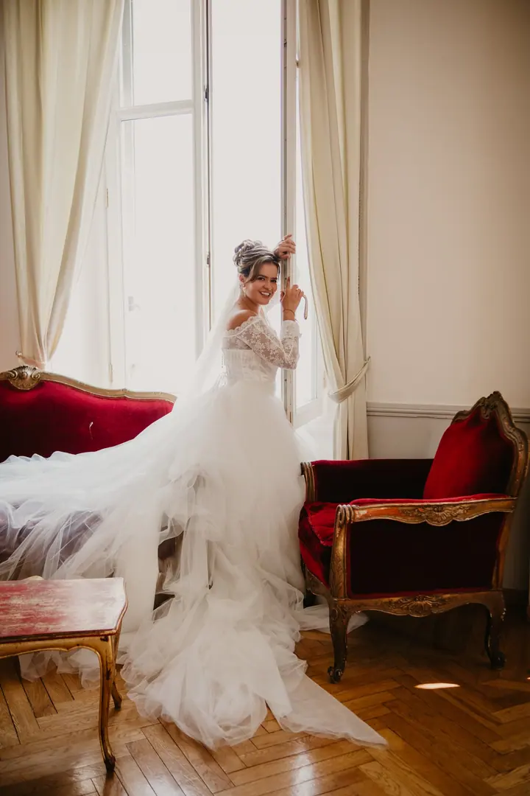

Svatební focení
Fotím dokumentárně a nenápadně, zapadnu mezi svatebčany jako jeden z vás a do dění nezasahuji. Udělám vám i elegantní portréty a skupinové fotky, a pokud chcete, i analogové fotky na film.

Jmenuji se Jan Šedivý, ale klidně mi říkejte Honza. Jsem svatební fotograf z Prahy a fotím dokumentárně, nenápadně a bez póz, tak jak váš den skutečně probíhá. Jezdím po…
Rezervovat termínV pražském vydavatelství jsem měl rozjetou kariéru šéfredaktora, ale dal jsem přednost své největší vášni, svatebnímu focení. Za řadu let jsem vyfotil přes sto svateb a dovedu odhadnout, kdy přijde exploze emocí. Už skoro deset let fotím na Fujifilm, a když budete chtít, vezmu s sebou i film.


Na vaší svatbě chci být spíš kamarád než cizí člověk, který ruší v intimních chvílích. Proto vás před svatbou zvu na kafe do své oblíbené kavárny, abych vám mohl fotky ušít na míru podle toho, jací jste. V den svatby pak o mně skoro nebudete vědět.
Mimo focení mě nejvíc baví hudba. Hraji na kytaru, pravidelně vystupuji v pražských klubech a občas zahraji i na svatbě. Dvakrát jsem uběhl maraton a díky synovi Toníkovi jsem si zamiloval fotbal, i když jsem jako kluk hrál hokej.
Co fotím
Fotím dokumentárně a nenápadně, zapadnu mezi svatebčany jako jeden z vás a do dění nezasahuji. Udělám vám i elegantní portréty a skupinové fotky, a pokud chcete, i analogové fotky na film.
Společně se projdeme, popovídáme si a vyfotíme vás na místě, ke kterému máte vztah. Fotím i tajné žádosti o ruku a rád vám poradím, jak je vymyslet.
Miminko nearanžuji do póz, focení se přizpůsobí vašemu tempu. Fotíme doma, v přírodě nebo v ateliéru, nejlépe do 14 dnů od narození.
Bez pravidel a póz, doma, venku v přírodě nebo v ateliéru s fashion-editorial nádechem. Hlavní je, abyste se uvolnili a focení si užili.
Fotografie jsou ilustrační
Postup
Pošlete mi přes formulář termín a místo svatby, nebo zavolejte na +420 607 586 833. Ozvu se vám s dostupností a cenou.
Sejdeme se v mé oblíbené kavárně, poznáme se a probereme, jak si svůj den představujete.
Párům, které mi svěří svatbu, nabízím předsvatební focení. Zvyknete si na mě a na svatbě pak budete ještě uvolněnější.
Zapadnu mezi hosty a fotím nenápadně, bez zasahování do dění. Postarám se i o portréty a skupinové fotky a vše vkusně vyladím do příjemných barev.
Otázky
Ano, jezdím po celém Česku a také do zahraničí. Fotil jsem třeba svatbu u jezera Como v Itálii.
Nebudete. Fotím hlavně přirozené momentky a do strojených póz vás tlačit nebudu. Krásné portréty a skupinové fotky ale samozřejmě uděláme také.
Ano, svatbu vám rád vyfotím i analogově. Fotky na film mají ten správný filmový vibe a nadčasové barvy.
Ideálně do 14 dnů od narození. Fotit můžeme u vás doma, v přírodě nebo v ateliéru, jehož pronájem se platí zvlášť, zhruba 1000 Kč za hodinu.